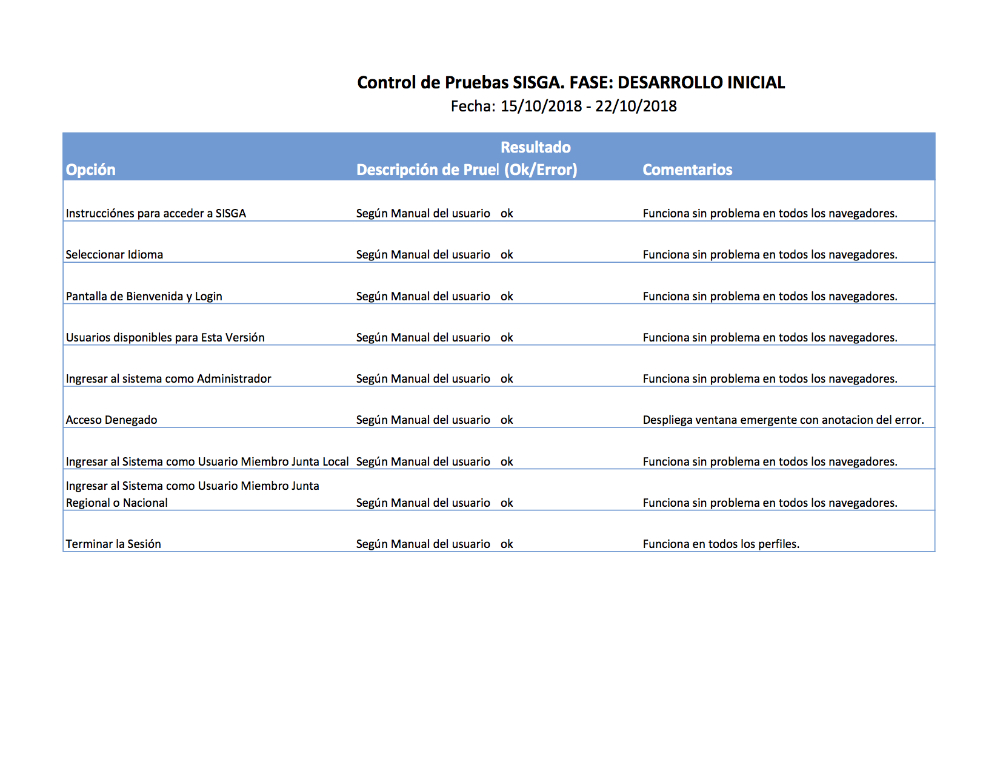

El presente documento define los lineamientos a seguir para el Plan de Calidad del proyecto de software grupal realizado por estudiantes del módulo de Práctica Aplicada TDS, en el que se requiere desarrollar un software que de solución tecnológica a los requerimientos en una organización. El software a desarrollar tiene por objeto servir de herramienta para la gestión de Actas de las reuniones de la Fraternidad “Laudato Si” de la Juventud Franciscana (JUFRA).
El propósito de este plan de calidad es identificar los procedimientos de gestión de la calidad que van a ser aplicados entre el área usuaria receptora del software de gestión de actas a realizar, como los estudiantes que desarrollarán en un ámbito académico dicho software.
Este plan de calidad se aplica al desarrollo e implementación del software para la Gestión de Actas – SISGA
Cualquier actividad por fuera del desarrollo e implementación del software SISGA.
El cliente o área usuaria no ha realizado solicitudes específicas referentes a objetivos de calidad de forma cuantificable. Sin embargo, se implementarán los métodos de gestión de calidad incluyendo casos de prueba pertinentes para alcanzar atributos como testeabilidad, correctitud, contra los requerimientos y casos de uso detallados en el documento de especificaciones.
Para éste proyecto se eligió un ciclo de vida incremental, por lo que se clasificarán los casos de prueba como Obligatorios, Requeridos, y Postergables
Obligatorios: Si un caso de prueba falla, y se ha catalogado como Obligatorio, es porque tiene un impacto muy grande en el sistema y se debe detener la entrega hasta que el caso de prueba entregue resultado exitoso.
Requeridos: Si un caso de prueba falla, y se ha catalogado como Requerido, es porque tiene un impacto medio en el sistema y se entra a evaluar si fue justificado y poco probable que se repita en producción, se evalúa el impacto de entregarlo resuelto o aplazarlo.
Postergable: Si un caso de prueba falla, y se ha catalogado como Postergable, no se detiene la entrega y se marca como bug (defecto) para la siguiente entrega, siempre y cuando no se haya postergado antes en más de una ocasión.
Se aplicarán como métricas porcentajes de éxitos en las pruebas contra el porcentaje de 100% de resultados esperados con un margen de error del 5%, de la siguiente forma:
Obligatorios: Los casos de prueba deben ser exitosos en un 100%.
Requeridos: Los casos de prueba deben ser exitosos en más de un 95%.
Postergable: Los casos de prueba deben ser exitosos en más de un 50% Esto quiere decir, que si más de la mitad de los postergables fallan, debe resolverse los suficientes (y no postergar su resolución) para que se cumpla que el al menos el 50% quedó resuelto en la entrega.
El Gerente del proyecto tiene la responsabilidad total del éxito del proyecto, incluyendo la conformidad del área usuaria y el cumplimiento de los objetivos descritos.
El Gerente de Calidad es responsable de las auditorías del proyecto y seguimiento de las acciones que se deriven de ellas. Cualquier desviación del plan de calidad debe ser aprobada por el Gerente de Calidad para que dicha desviación se haga realidad.
Los actores que juegan papeles dentro de la ejecución de este proyecto, son responsables cada uno de que sus acciones y actitudes propendan por alcanzar los niveles establecidos en este plan de calidad y en general en alcanzar los objetivos propuestos tanto por el software, como por el proyecto, con niveles de satisfacción elevados en su calidad.
Este Plan de Calidad hace referencia a documentación complementaria, y se espera que dichos documentos y recursos documentales, se mantengan actualizados por sus respectivos responsables.
Los archivos relacionados con el proyecto, tanto en su código fuente, como en su documentación y registros digitales relacionados, estarán disponibles en Internet por un mínimo de 6 meses después de la entrega y cierre del proyecto (se espera que la versión productiva se aloje en los propios servidores del área usuaria o de un proveedor de hosting contratado por ese área –se asesorará al área usuaria para la implementación de la versión en producción- ). La implementación se detallará en el ítem Instalación y puesta en servicio, mas adelante en este documento.
| Nombre | Roles y Funciones Principales |
|---|---|
| Cristian Alonso |
Administrador de la Configuración y Desarrollador Funciones como Administrador de la Configuración
Funciones como Desarrollador
|
| Sneider Durango |
Analista de Requerimientos y Desarrollador Funciones como Analista de Requerimientos
Funciones como Desarrollador
|
| Juan Manjarrés |
Arquitecto y Desarrollador Líder Funciones como Arquitecto
Funciones como Desarrollador
|
| Liana Rodríguez |
Gerente de Proyecto y Desarrolladora Funciones como Gerente de Proyecto
Funciones como Desarrolladora
|
| Leonardo Zambrano |
Gerente de Calidad y Desarrollador Funciones como Gerente de Calidad
Funciones como Desarrollador
|
El elemento de entrada principal al proyecto es el documento ERS-SISGA (Documento de Especificación de Requerimientos de Software), que pueder verse en el item 2.3 ERS - Documento de Especificación de Requisitos de Software.
Una vez firmado el documento ERS por parte del área usuaria, se espera que cualquier comunicación formal sobre este proyecto, se lleve a cabo a través del Gerente del Proyecto.
El software SISGA se desarrollará con lenguajes, herramientas y librerías que no requieran de la adquisición de licencias por parte ni del cliente ni del equipo de desarrollo, al ser éste software construido en un ámbito académico y al no poseer el área usuaria presupuesto para este fin. Se proveerá durante el desarrollo de este proyecto y por un período de seis (6) meses adicionales a la entrega y cierre del proyecto, de un espacio sin costo en un plan de hosting actualmente ya en uso, en una carpeta destinada para éste fin. Luego de dichos seis (6) meses no se garantizará su disponiblidad, por lo que al momento de entregar el software, se recomendará iniciar las gestiones pertinentes para la habilitación de este software con la información real del área usuaria, en un proveedor de hosting contratado por ellos.
Las solicitudes de cambios al software que afecten a la funcionalidad deberán ser aprobadas por el supervisor del proyecto (que forma parte del área usuaria) y solo serán llevadas a cabo si son aprobadas por el Gerente del Proyecto antes que se comience a trabajar en ellos.
No se prevé que el área usuaria (ni tampoco el equipo de desarrollo) deba realizar ningúna adquisición ántes ni durante la realización del proyecto. Sólo se requerirá que el área usuaria defina la adquisición de un plan de hosting (y opcionalmente, dominio web) para su sistema de producción al finalizar los seis (6) meses del cierre del proyecto.
La disponibilidad de los items descritos en la sección de Recursos, se hará de la siguiente forma.
Código fuente: Repositorio de github. URL: https://github.com/jumanja/SISGA
Software en ejecución: Página web. URL: https://jumanja.net/SISGA/
Documentación: Página web. URL: https://jumanja.net/SISGA/docs/
No hay procesos especiales para este proyecto.
El administrador de la configuración deberá velar porque los documentos, archivos, entregables se mantengan en sus últimas versiones en las rutas y repositorios correspondientes.
El software desarrollado fruto del ejercicio académico será liberado bajo la licencia MIT, que permite ser utilizado tal cual sea desarrollado en cualquier tipo de utilización sin restricción. La información ingresada al sistema es y será de propiedad del área usuaria.
El software será entregado instalado en las rutas relacionadas en el item Instalación y puesta en servicio, y se asesorará al área usuaria en su proceso de instalación en el sistema de producción.
Una No conformidad la definiremos como un hallazgo que, a pesar de estar especificado en el documento ERS previamente aprobado, no se comporta como se definió. Una No conformidad no podrá volver a aparecer en el siguiente incremento, y por supuesto el software no podrá ser entregado en su totalidad si tiene todavía presente una No conformidad.
El progreso del proyecto será registrado y controlado de forma semanal a partir de la firma y aprobación del ERS y podrán ser presentados en reuniones de avance con el área usuaria. El desarrollador líder debe conservar registros de cualquier problema identificado que persista entre incrementos y potencialmetne se pueda convertir en No Conformidad.
Los problemas deben categorizarse según su origen:
Especificación de Requisitos (faltan o Incorrectos).
Diseño (falta o incorrecto).
Codificación (falta o incorrecta, error de interfaz, error de manejo de datos)
Al final de cada incremento deberán realizarse las acciones necesarias para verificar que se esté siguiendo las indicaciones de este plan de calidad, y tomar las decisiones correspondientes buscando siempre cumplir los objetivos de calidad dispuestos en él.
El presente documento especifica las actividades definidas como necesarias para el aseguramiento de Calidad del software SISGA a ser construído, teniendo en cuenta que el ciclo de vida de este software es de tipo Incremental, intentaremos implementar metodologías, procesos, procedimientos y buenas prácticas para el aseguramiento y control de calidad del producto de software, incluyendo diferentes tipos de pruebas, reporte de fallos, solicitudes de corrección, siguiendo los lineamenientos generales descritos en el documeneto Plan de Calidad.
A continuación se especifican los elementos de organización y responsables de la gestión de calidad del proyecto.
El Gerente de Calidad en este proyecto es el responsable de hacer la gestión de las tareas, métodos y procedimientos descritos en este documento. Trabajará de la mano del Arquitecto de Software en temas técnicos, y del Gerente de Proyecto en temas administrativos.
| Tarea | Entregable Asociado | Responsable |
|---|---|---|
| Identificar las propiedades de Calidad del proyecto. | Plan de Calidad | Gerente de Calidad |
| Elaborar el Plan de aseguramiento y control de calidad | Plan de Aseguramiento y Control de Calidad | Gerente de Calidad |
| Evaluar la calidad del producto | Informe de revisión de Calidad | Gerente de Calidad |
| Revisar que el proceso se ajuste si es necesario | Informe de revisión de Calidad | Gerente de Calidad |
| Realizar Revisión Técnica Formal Semanal | Informe de revisión Técnica Formal | Gerente de Calidad |
| Realizar evaluación final de Calidad | Informe Evaluación Final de Calidad | Gerente de Calidad |
Como responsible de la calidad formal del proyecto, el Gerente de Calidad. Sin embargo, como responsables de calidad en cada actividad que realicen en el proyecto, se encuentran todos los integrantes del equipo, puesto que deben conocer cuáles son los objetivos, lo métodos y procedimientos que pretender llevar al proyecto a un alto nivel de calidad, se espera de todos y cada uno de los integrantes del equipo realicen sus tareas de la forma esperada y entreguen sugerencias para la mejoría de la calidad y los planes de calidad del proyecto si diera a lugar.
A continuación se describen los entregables del proyecto y el Rol responsable principal de cada entregable, encargo de crear / actualizar y mantener actualizado dicho entregable a lo largo del proyecto:
| Entregable | Responsable |
|---|---|
| Documento Especificación de Requisitos de Software ERS | Analista de Requerimientos |
| Documento Modelo de Casos de Uso | Arquitecto |
| Documentación de Plan de Proyecto | Gerente de Proyecto |
| Alcance del Proyecto | Gerente de Proyecto |
| Documento de Arquitectura de Proyecto y Producto | Arquitecto |
| Documento Diagramas de Diseño de la Solución (UML) | Arquitecto |
| Modelo de Datos Relacional | Arquitecto |
| Modelo de Entidad Relación | Arquitecto |
| Documentación Técnica y de Implementación | Desarrollador Líder |
| Documento Manual del Usuario | Desarrollador Líder |
| Documento Plan de Gestión de la Configuración | Administrador de la Configuración |
| Documento Revisión Formal Semanal, y Final | Gerente de Calidad |
Se harán revisiones del producto de la siguiente forma:
Se espera que de las revisiones formales (semanalmente) se desprenda un informe en formato de hoja de cálculo basados en el siguiente Ejemplo:
Para éste proyecto se eligió un ciclo de vida incremental, por lo que se clasificarán los casos de prueba como Obligatorios, Requeridos, y Postergables.
Fórmula Métrica:
OF= (NroObligFallidos * 100) / NroTotalObligatorios
RF= (NroReqFallidos * 100) / NroTotalRequeridos
PF= (NroPostergFallidos * 100) / NroTotalPostergables
El rango aceptable para cada uno será:
| Tipo de Casos de Prueba | Rango Mínimo | Rango Máximo |
|---|---|---|
| Número de casos de prueba Obligatorios Fallidos (OF) | 100% | 100% |
| Número de casos de prueba Requeridos Fallidos (RF) | 95% | 100% |
| Número de casos de prueba Postergables Fallidos (PF) | 50% | 100% |